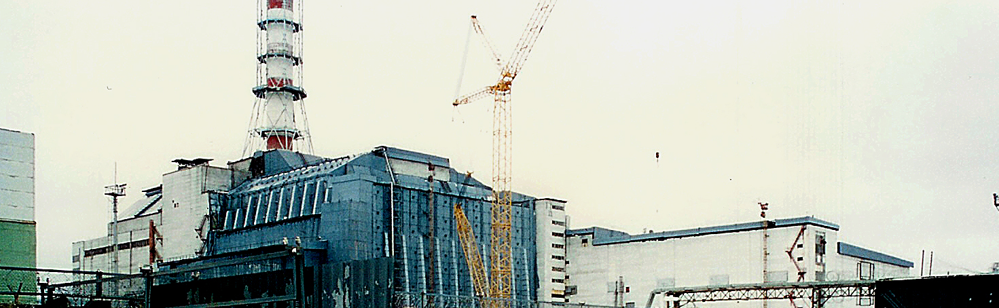

Зачекайтке
Йде завантаження
Чорно́бильська атомна електростанція імені Леніна, скорочено ЧАЕС — зупинена атомна електростанція біля міста Прип'яті в Київській області, що діяла з 1977 по 2000 роки. Будівництво станції було розпочато 1970 року, перший блок запущено 1977 року. АЕС розташована на відстані 2 км від міста Прип'яті, збудованого паралельно зі станцією передусім для її працівників. Назва пов'язана з містом Чорнобилем, тодішнім районним центром цієї місцевості. Станом на початок 1986 року ЧАЕС була найпотужнішою атомною електростанцією європейської частини СРСР. 26 квітня 1986 року при проведенні проектних випробувань стався вибух, що повністю зруйнував четвертий реактор станції і спричинив значне забруднення навколишньої території радіоактивними речовинами. Внаслідок цієї аварії було повністю евакуйовано населення Прип'яті, Чорнобиля та всіх інших населених пунктів у радіусі 30 км навколо станції, а сама аварія є однією з найбільших техногенних катастроф в історії людства.
Аварія 26 квітня 1986, ліквідація наслідків
26 квітня 1986 при проведенні проектних випробувань однієї з систем забезпечення безпеки приблизно о 1:23 відбувся вибух, який повністю зруйнував реактор. Будівля енергоблоку, покрівля машинного залу частково обвалилися. У різних приміщеннях і на даху виникло понад 30 вогнищ пожеж. Основні осередки пожежі на даху машинного залу до 2:10 і на даху реакторного відділення до 2:30 були пригнічені. До 5:00 26 квітня пожежа була ліквідована. Після розтравлення палива зруйнованого реактора приблизно о 20:00 26 квітня у різних частинах центрального залу 4 блоку виникла пожежа великої інтенсивності. До гасіння пожежі внаслідок важкої радіаційної обстановки і значної потужності горіння штатними засобами не приступали. Для ліквідації загоряння та забезпечення підкритичності дезорганізованого палива використовувалася вертолітна техніка. У перші години розвитку аварії був зупинений сусідній 3-й енергоблок, відбулись відключення устаткування 4-го енергоблоку і розвідка стану аварійного реактора. У результаті аварії стався викид у довкілля до 14×1018 Бк, що становить приблизно 380 мільйонів кюрі радіоактивних речовин, зокрема ізотопів урану, плутонію, йоду-131, цезію-134, цезію-137, стронцію-90. Безпосередньо під час вибуху на четвертому енергоблоці загинув старший оператор Валерій Ходемчук. Володимир Шашенок, його товариш, помер вранці від отриманих травм. 27 квітня 104 постраждалих були евакуйовані до Московської лікарні № 6. Згодом, у 134 співробітників ЧАЕС, членів пожежних та рятувальних команд розвинулася променева хвороба, 28 з них померли протягом наступних кількох місяців. Для ліквідації наслідків аварії розпорядженням Ради Міністрів СРСР була створена урядова комісія, головою якої був призначений заступник голови Ради міністрів СРСР Борис Щербина. Основна частина робіт була виконана в 1986—1987, в них брали участь приблизно 240 000 осіб. Загальна кількість ліквідаторів (включаючи подальші роки) становить близько 600 000. У перші дні основні зусилля були спрямовані на зниження радіоактивних викидів зі зруйнованого реактора і запобігання набагато серйозніших наслідків.
Саркофаг над четвертим блоком
Потім почалися роботи по очищенню території і похованню зруйнованого реактора. Уламки, розкидані по території АЕС і на даху машинного залу були прибрані всередину саркофага або забетоновані. Довкола 4-го блоку почалось спорудження бетонного «саркофага» (так званий об'єкт «Укриття»). У процесі будівництва «саркофагу» було укладено понад 400 тисяч м³ бетону та змонтовано 7 000 тонн металоконструкцій. 30 листопада 1986 по завершенню його спорудження Актом Державної приймальної комісії законсервований четвертий енергоблок був прийнятий на технічне обслуговування. 22 травня 1986 постановою ЦК КПРС і Ради Міністрів СРСР № 583 було встановлено термін введення в експлуатацію енергоблоків № 1 і 2 ЧАЕС — жовтень 1986. У приміщеннях енергоблоків першої черги проводилася дезактивація, 15 липня 1986 закінчився її перший етап. У серпні на другій черзі ЧАЕС роз'єднали комунікації, загальні для 3-го і 4-го блоків, була зведена бетонна розділова стіна в машинному залі. Після виконаних робіт з модернізації систем станції, передбачених заходами, затвердженими Міненерго СРСР 27 червня 1986 і спрямованими на підвищення безпеки АЕС з реакторами РБМК, 18 вересня було отримано дозвіл на початок фізичного пуску реактора першого енергоблоку. 31 грудня 1987 рішенням Урядової комісії № 473 було затверджено акт приймання в експлуатацію 3-го енергоблоку ЧАЕС після ремонтно-відновлювальних робіт. Будівництво 5-го і 6-го блоків було припинено, незважаючи на високий ступінь готовності об'єктів. Існувала думка про доцільність закінчення будівництва і пуску 5-го блоку, що мав незначні рівні радіаційного забруднення, замість здійснення масштабної дезактивації 3-го блоку для його подальшої експлуатації. У перші дні після аварії було евакуйовано населення міста-супутника ЧАЕС — Прип'ять і жителів населених пунктів у 10-кілометровій зоні. У наступні дні було евакуйовано населення інших населених пунктів 30-кілометрової зони. 2 жовтня 1986 було вирішено будувати нове місто для постійного проживання працівників Чорнобильської АЕС та членів їхніх сімей після аварії на ЧАЕС — Славутича. 26 березня 1988 був виданий перший ордер на заселення квартир. У результаті аварії з сільськогосподарського обороту було виведено близько 5 млн. га земель, довкола АЕС була створена 30-кілометрова зона відчуження, знищені і поховані сотні дрібних населених пунктів, близько 200 000 осіб було евакуйовано із зон забруднення. Аварія була оцінена 7-им рівнем за шкалою INES.
Експлуатація в 90-х. Остаточна зупинка
17 травня 1995 Рада Міністрів СРСР видала розпорядження про розробку програми виведення з експлуатації енергоблоків. 2 серпня того ж року Верховна Рада Української РСР оголосила Мораторій на будівництво нових атомних станцій та на збільшення потужності існуючих строком на п'ять років. Під впливом світової громадськості та взятих на себе зобов'язань було ухвалено остаточне рішення про виведення з експлуатації Чорнобильської АЕС. 29 березня 2000 Кабінетом Міністрів України було ухвалено достроково зняти з експлуатації енергоблок № 3 та остаточно закрити Чорнобильську АЕС до кінця 2000. У квітні Указом Президента України була створена Міжвідомча (урядова) комісія з комплексного вирішення проблем Чорнобильської АЕС. Указом Президента України від 25 вересня було створено Організаційний комітет з підготовки та проведення заходів, пов'язаних з Актом закриття Чорнобильської АЕС. У затверджених 19 жовтня 2000 Президентом України заходах щодо закриття Чорнобильської атомної станції, а також у Постанові Кабінету Міністрів України від 29 листопада було визначено термін остаточної зупинки і переведення в режим зняття з експлуатації 3-го блоку ЧАЕС — 12:00 15 грудня 2000. 14 грудня реактор був запущений на 5 % потужності для церемонії зупинки і 15 грудня 2000 о 13:17 за наказом Президента України під час трансляції телемосту Чорнобильська АЕС — Національний палац «Україна» поворотом ключа аварійного захисту п'ятого рівня (АЗ-5) реактор енергоблока № 3 Чорнобильської АЕС було зупинено назавжди і станція припинила генерацію електроенергії. У 2010 році відпрацьоване ядерне паливо було повністю вивантажено з блоку № 3. 23 квітня 2016 року від ядерного палива був повністю звільнений блок № 2. 6 червня 2016 року остання відпрацьована тепловиділяюча збірка з блоку № 1 була перевезена в сховище відпрацьованого ядерного палива мокрого типу (СВЯП-1).
Заміна саркофагу
17 вересня 2007 було оголошено що нове сталеве укриття буде збудоване поверх старого саркофагу над четвертим енергоблоком ЧАЕС. Проект, що фінансується Європейським банком реконструкції і розвитку, буде спроектований і збудований французьким консорціумом Новарка, який включає компанії Bouygues та Vinci. Новарка має на меті збудувати гігантську аркоподібну структуру зі сталі, шириною 190 м і довжиною 200 м для накриття існуючого об'єкту Укриття. Проект оцінюється у $1.4 мільярдів і мав завершитись до 2015. Крім будівництва саркофагу у Зоні відчуження планується будівництво Централізованого сховища ядерного палива українських АЕС. В листопаді 2016 року над четвертим енергоблоком ЧАЕС почали встановлювати новий саркофаг. Зі швидкістю 10 м/год її насували на саркофаг протягом двох тижнів. 29 листопада 2016 року новий Конфаймент було встановлено, він став найбільшою на цей час рухомою спорудою в світі. За рік після його встановлення, незважаючи на продовження будівництва, рівень радіації поблизу арки знизився в 10 разів. Остаточна здача об'єкта запланована на травень 2018 року.